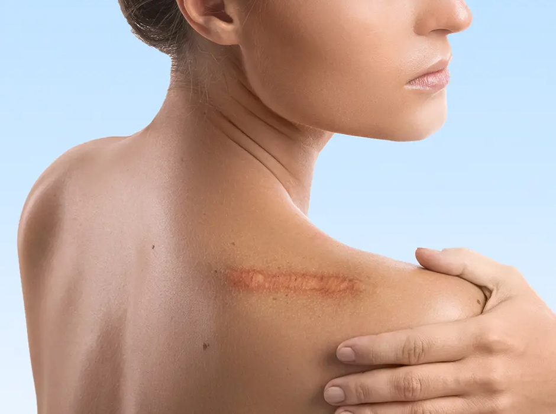

Book an Appointment
If you would like to discuss treatment options for your scars, call us on 020 7467 3720 or use our contact form. Our team will be happy to arrange a consultation with one of our dermatologists.

Scarring can affect both appearance and confidence, whether caused by acne, injury, surgery, or skin conditions. At the London Dermatology Centre, our Scar Treatment Clinic offers expert care to reduce the visibility of scars and improve skin texture. Using the latest medical and cosmetic dermatology techniques, we tailor treatments to each individual, helping restore smoother, clearer skin.
Scars form as part of the skin’s natural healing process, but not all scars are the same. Some remain flat and fade over time, while others may be raised, indented, or discoloured. Factors such as skin type, age, and the cause of the wound all influence how a scar develops.
Our dermatologists take time to assess the type of scar you have and discuss the best treatment options available. Whether you are dealing with old acne scars, keloids, or recent surgical marks, personalised treatment is essential for achieving the best outcome.
We regularly treat a wide range of scars, including:
Pitted, rolling, or boxcar scars left after severe acne.
Raised and thickened scars that remain within the boundary of the wound.
Firm, overgrown scars that extend beyond the original injury.
Depressions in the skin, often caused by chickenpox or trauma.
Marks left after medical or cosmetic surgery.
Bands of thinned skin caused by rapid stretching of the skin, common after pregnancy or growth spurts.
Each scar is unique, so your dermatologist will advise on the most effective approach.


Many people try over-the-counter creams or home remedies without seeing meaningful results. While these products may provide minor improvements, they often cannot address deeper or more complex scars. At the London Dermatology Centre, every treatment is performed or overseen by experienced dermatologists who understand the science of skin healing.
By choosing professional care, you gain access to advanced medical-grade technologies such as lasers, microneedling, and injectables — treatments that deliver visible, longer-lasting results. Most importantly, your treatment plan will be tailored specifically to your scar type and skin needs, ensuring safe and effective care you can trust.
Our Scar Treatment Clinic offers a full range of evidence-based therapies, which may include:
Laser treatments – targeting pigmentation, redness, and uneven texture.
Chemical peels – resurfacing the skin to smooth shallow scars.

Microneedling – stimulating collagen production for long-term skin repair.
Dermal fillers – lifting indented scars for a smoother appearance.
Steroid injections – softening raised or keloid scars.
Cryotherapy – freezing stubborn keloid or hypertrophic scars.
Topical treatments – prescription creams or silicone gels to improve scar quality.

Your first step is a consultation with one of our experienced dermatologists. During this appointment, your scar will be carefully examined, and we’ll discuss your concerns, treatment goals, and medical history. We’ll then create a tailored plan, ensuring you understand the potential results, number of sessions required, and expected downtime.
Most scar treatments are minimally invasive and can be performed in our clinic without the need for hospital admission. Recovery time varies depending on the method, but our team provides full aftercare guidance to help you heal effectively and achieve the best outcome.

We recognise that scars can affect not only your skin but also your confidence. That is why we focus on personalised care at every stage, from your first consultation to your aftercare. Your dermatologist will guide you through the process, explaining each treatment option clearly and setting realistic expectations for your results.
After your treatment, our team remains available to support your recovery and monitor your progress. We provide practical aftercare advice, schedule follow-ups if needed, and adjust your treatment plan to achieve the best possible outcome. This continuity of care helps ensure you feel reassured, informed, and confident throughout your journey.
Most scars can be improved with the right approach, including acne scars, surgical scars, and keloids. Some treatments are better suited for raised scars, while others work well for indented or discoloured marks. Your dermatologist will match the treatment to your specific type of scar for the best results.
The number of sessions depends on the type and severity of your scar, as well as the treatment chosen. Some scars respond well after just one or two sessions, while others may need a course of several treatments. During your consultation, your dermatologist will give you a clear idea of what to expect.
Most treatments cause only mild discomfort, and many are well tolerated with minimal anaesthetic or none at all. Laser and microneedling treatments may feel like a tingling or stinging sensation, while injections can cause slight pressure. We always make sure you are as comfortable as possible throughout your treatment.
It is unlikely that a scar will vanish completely, but treatment can significantly reduce its visibility. The goal is to improve texture, colour, and smoothness so that the scar blends more naturally with your skin. Many patients see a dramatic improvement in both appearance and confidence.
This varies depending on the treatment method. Some, like chemical peels or laser therapy, may cause temporary redness or peeling for a few days, while others have virtually no downtime. Your dermatologist will explain recovery expectations and aftercare instructions in detail.
Yes, although keloid scars can be challenging, treatments such as steroid injections, cryotherapy, or laser therapy can reduce their size and discomfort. Often, a combination of treatments works best. Regular follow-up is sometimes required to maintain results.
Results from scar treatment are generally long lasting, though new scars can form if you sustain further skin injury. For certain scar types like keloids, there is a chance of recurrence, but ongoing management can help reduce this risk. Your dermatologist will guide you on long-term care.
It is usually best to allow the wound to fully heal before starting treatment. Early intervention with topical therapies may help, but most advanced treatments are performed once the scar has stabilised. A dermatologist can advise you on the safest time to begin.
Yes, but the choice of treatment may differ depending on your skin tone and sensitivity. Certain lasers, for example, need to be adjusted carefully for darker skin to avoid pigmentation changes. At our clinic, we have extensive experience treating all skin types safely.
Booking is simple — call us on 020 7467 3720 or use our contact form. Our team will arrange a convenient consultation with a dermatologist who specialises in scar treatments. You’ll have the opportunity to ask questions and explore the options most suitable for your needs.
The London Dermatology Centre is located at 69 Wimpole Street, London, W1G 8AS, in the heart of the Harley Street medical district. We’re just a few minutes’ walk from Oxford Circus, Bond Street, and Regent’s Park Underground stations.
Our clinic provides a calm, discreet, and professional setting for both medical and cosmetic dermatology treatments, including photodynamic therapy. Whether you’re visiting for diagnosis, treatment, or follow-up care, you’ll receive expert-led support in a welcoming environment.
Pay-and-display parking and nearby car parks are available if you're travelling by car. For travel help or directions, feel free to contact our team on 020 7467 3720.
Monday - Friday: 9.00 AM - 5.30 PM
Saturday & Sunday: Closed
69 Wimpole Street,
London W1G 8AS.
If you would like to discuss treatment options for your scars, call us on 020 7467 3720 or use our contact form. Our team will be happy to arrange a consultation with one of our dermatologists.